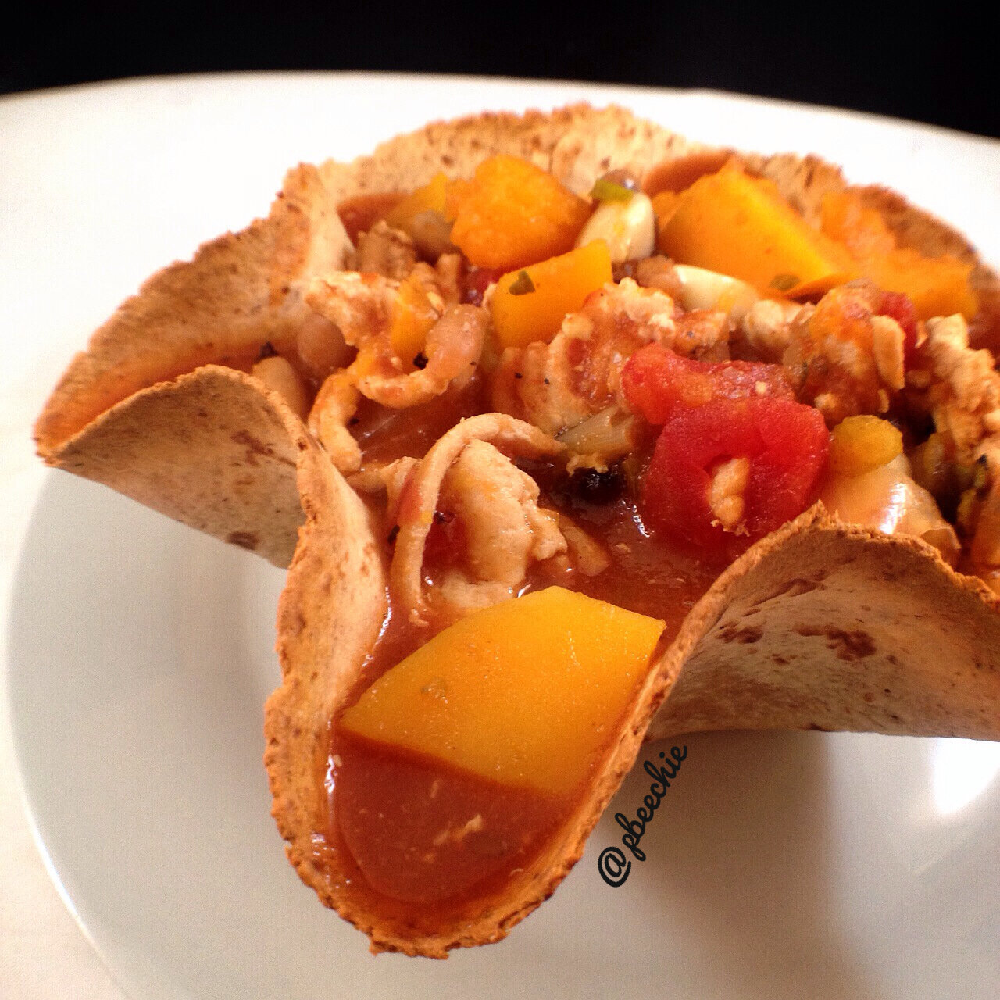

Chipotle Butternut Turkey Chili
I've been craving a nice, hearty bowl of chili since it's starting to get cold here. With squash in it of course. I made one last winter from a recipe but can't find it anymore so I made my own this year using what I had available and was sooo pleased with how it turned out! My boyfriend and I split this all week. So easy to reheat and eat in 5 minutes :) Comforting and warmmmm for the winter! Not to mention the macros are pretty rad ;) 
- 1 lb 99% lean ground turkey
- 1/2 onion (1.25 cups, ~120g)
- 1/2 orange bell pepper (3/4 cup, ~90g)
- 3 garlic cloves
- 1 lb raw butternut squash
- 1 box Melissa's Produce Six Bean Medley (1.25 cup mixed beans, ~350g)
- 3 scallions
- 1 can of Hunt's Fire Roasted Garlic diced tomatoes
- 2 cups no salt added vegetable broth (or chicken broth)
- 1 cup Hunt's all natural tomato sauce
- 3/4 tsp chipotle chili powder
- 1/2 tsp onion powder
- 1 tsp cumin
- 1 tsp oregano
- 1/4 tsp black pepper
First, spray a large pan with nonstick spray and add your turkey into the pan. Cook over a medium heat until the turkey is fully cooked and no longer pink. Throw the turkey into a crockpot. Then, chop your onion, bell pepper, and garlic cloves. Spray the pan again, add these three things, and lightly cook again until the onion is slightly soft. Add these three things to the crockpot as well. Then, add the remaining ingredients to the crockpot. Turn it to the high setting and let cook for 4 hours; it'll take 6-7 hours if you use the medium setting.
Serve! It's even better the day after when you reheat it because it thickens up and the flavors augment after sitting for a day. :DDD ALSO great with some diced avocado over the top!
For one cup of chili: 152 calories; 1 g fat, 21 g carbs (5 g fiber), 15 g protein